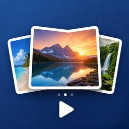

Support · 技術支援 — iPhone & iPad
When reporting a problem, please include your device model, iOS version, the app version (shown in the App Store), the play mode you were using, and where your photos come from (Photo Library, Files, USB, SMB…).
Choose a photo source (your Photo Library, or a folder in the Files app), pick one of the 13 play modes, then tap Play. Your last folder is remembered, so next time you can start right away.
Yes. Any folder you can open in Apple's Files app works — On My iPhone / iPad, iCloud Drive, USB drives, SD card readers and SMB file servers. Connect the drive or server in Files first, then choose that folder in SlideShow. Subfolders are scanned automatically.
Swipe left or right. With a hardware keyboard, use the arrow keys, Space to pause and Esc to exit. (iOS does not allow apps to use the volume buttons for this.)
The Photo Library does not provide file sizes to apps, so sorting by size only works for folder sources. Name, date and random sorting work everywhere.
GIFs are shown as a still image (the first frame).
Open the settings inside the app and pick a language. The change takes effect immediately and does not affect your system language.
Yes. Start any mode and leave it running. For long sessions, keep the iPad connected to power. You can also use Guided Access (Settings › Accessibility) to lock the iPad to SlideShow.
No. There is no account, no ads and no tracking. Your photos are read only on your device and are never uploaded.
回報問題時，請一併提供裝置型號、iOS 版本、App 版本（可在 App Store 查看）、使用的播放模式， 以及照片來源（照片圖庫、檔案 App、USB、SMB…）。
選擇照片來源（照片圖庫，或「檔案」App 中的資料夾），挑一種播放模式（共 13 種），按下播放即可。 App 會記住上次的資料夾，下次開啟可以直接播放。
可以。只要能在 Apple「檔案」App 中開啟的資料夾都能用 —— 我的 iPhone / iPad、iCloud 雲碟、USB 隨身碟、 SD 讀卡機與 SMB 檔案伺服器。請先在「檔案」App 中接上裝置或連線伺服器，再到 SlideShow 選擇該資料夾。子資料夾會自動掃描。
左右滑動即可。接上實體鍵盤時可用方向鍵切換、空白鍵暫停、Esc 離開。 （iOS 不允許 App 使用音量鍵來切換。）
照片圖庫不提供檔案大小給 App，因此「依大小排序」只對資料夾來源有效；依名稱、日期與隨機排序則都可使用。
GIF 會以靜態圖片顯示（第一格）。
在 App 內的設定中選擇語言即可，立即生效，不會影響系統語言。
可以。開始任一播放模式並讓它持續播放即可，長時間播放建議接上電源。 也可以使用「引導使用模式」（設定 › 輔助使用）把 iPad 鎖定在 SlideShow。
不會。不需註冊、沒有廣告、不追蹤。照片只在你的裝置上讀取，絕不會上傳。